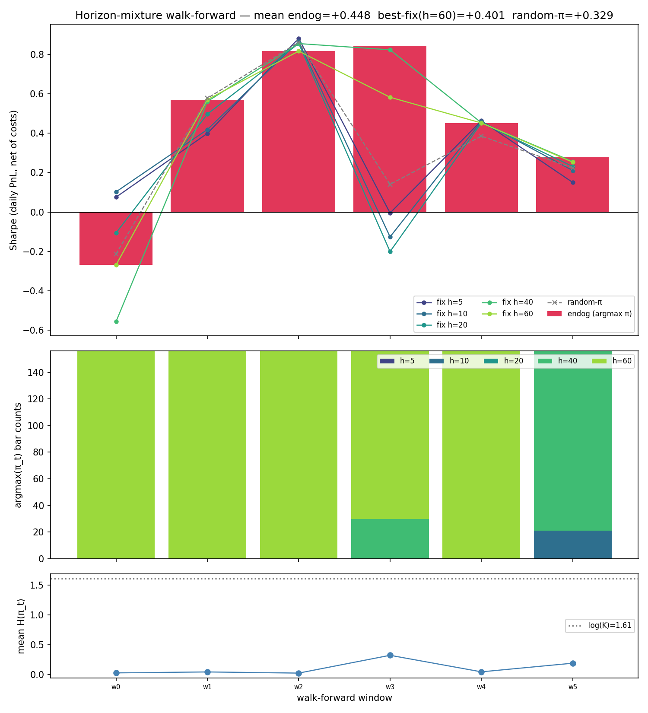
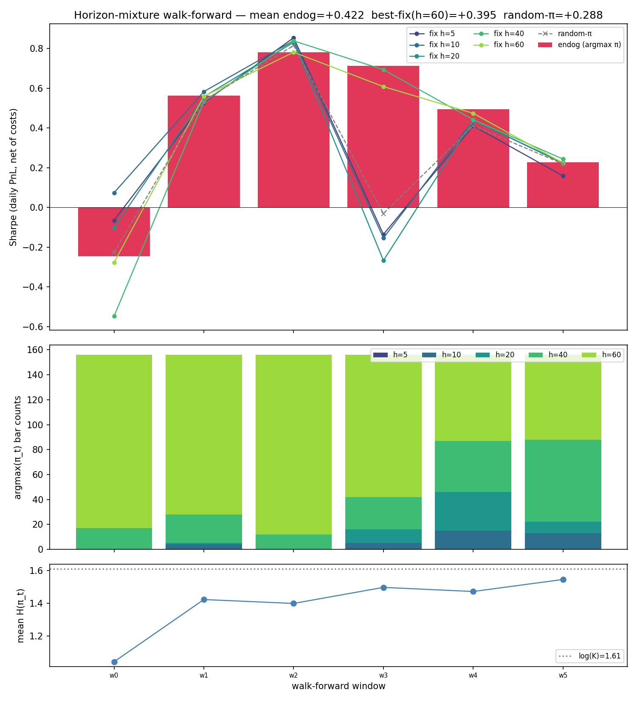
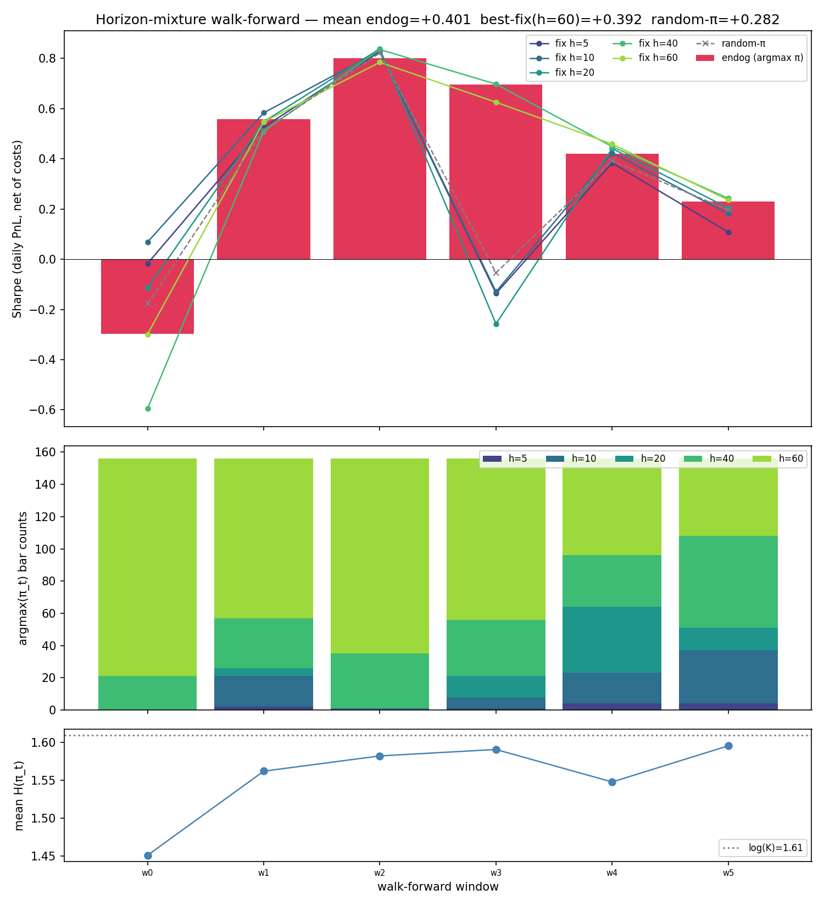

Endogenous-horizon mixture — state-conditional rebal cadence beats random-π but not the best fixed-h baseline¶
A pre-registered test of the hypothesis that rebal cadence should be a
model output instead of a 20-day constant: emit per-bar scores and a
softmax π_t over horizon bins {5, 10, 20, 40, 60}, deploy at
argmax(π_t), hold flat between rebals. The pre-registered
success criterion required endog Sharpe ≥ best-fixed + 0.10 AND beats
random-π AND no π collapse. Result: endog beats random-π convincingly
(+0.12) and beats every fixed-h baseline, but the lift over the best
fixed (h=60) is only +0.048 — under the +0.10 threshold.
Verdict: partial-OOS for the
state-conditional-horizon hypothesis. The signal exists (endog wins
on the 2/6 windows where π is mixed and ties or loses on the 4/6 windows
where π collapses to a single horizon), but the model finds the
degenerate "always pick h=60" attractor too eagerly. The operational
rule: a per-bar mixture loss without entropy regularization will
collapse to the lowest-turnover horizon globally. Next experiment is
an entropy-weight sweep (see
TODO/factor-horizon-entropy-reg)
to force the model to use the mixture before another window-level
verdict is taken.
Setup¶
| Universe | factor-narrow (297 stooq_us_long names, min_history_bars=6500) |
| Windowing | 6 walk-forward windows at h_min=5 fine grid (train=252 fine bars ≈ 5y, val=156 ≈ 3y, step=156) |
| Horizons | {5, 10, 20, 40, 60} days (K=5) |
| Architecture | Shared MLP trunk (hidden=32, n_layers=1) on 74-channel IndicatorGridConfig; per-ticker score head + per-bar K-way horizon head pooled over the liquid cross-section |
| Loss | -mean_t Σ_k π_t[k] · IC_k_t — per-bar Pearson IC weighted by state-conditional π_t. No entropy regularization (the run we ran). |
| Eval | Daily PnL stream on the model-emitted irregular cadence, Sharpe = mean / std × √252, 10 bps one-sided turnover cost. |
| Baselines | Fixed-h ∈ {5,10,20,40,60} (same scores, fixed cadence); random-π (same scores, uniform horizon sampling). |
Pre-registered null hypotheses:
| # | Null | Threshold |
|---|---|---|
| N1 | π collapse (single-bin share > 90% globally) | argmax-bin global share ≤ 0.90 |
| N2 | Beats fixed h_max=60 | endog Sharpe > fixed-h=60 |
| N3 | Beats best fixed by ≥ 0.10 | delta ≥ +0.10 |
| N4 | Beats random-π | delta ≥ 0 |
Compute placement: Modal T4 cloud, ~4 min walk-forward wall + feature/build time (~$0.07).
Result (2026-05-14)¶
Aggregate¶
| Arm | Mean val Sharpe |
|---|---|
| endog (argmax π) | +0.448 |
| fixed h=5 | +0.327 |
| fixed h=10 | +0.322 |
| fixed h=20 | +0.288 |
| fixed h=40 | +0.399 |
| fixed h=60 (best fixed) | +0.401 |
| random-π | +0.329 |
| Null | Observed | Verdict |
|---|---|---|
| N1 (no π collapse, share ≤ 0.90) | h=60 share = 0.80 | PASS (just) |
| N2 (beats fixed h_max=60) | +0.448 − +0.401 = +0.047 | PASS |
| N3 (beats best fixed by ≥ 0.10) | delta +0.048 | FAIL |
| N4 (beats random-π) | delta +0.119 | PASS |
Pre-registered overall: confirmed-OOS iff all four pass.
Three of four pass; N3 fails by 0.05. Per verdict vocabulary this is
partial-OOS.
Per-window stratification¶
The headline aggregate masks a bimodal per-window pattern: in 2/6 windows the model uses a real mixture and wins; in 4/6 it collapses to h=60 and loses.
| Win | Val start | Endog | Best fixed (which) | Delta | π entropy | π argmax mode |
|---|---|---|---|---|---|---|
| w0 | 2005-11-15 | −0.27 | +0.10 (h=10) | −0.37 | 0.03 | h=60 (156/156) |
| w1 | 2008-12-24 | +0.57 | +0.57 (h=60) | 0.00 | 0.04 | h=60 (156/156) |
| w2 | 2012-03-22 | +0.82 | +0.88 (h=5) | −0.07 | 0.02 | h=60 (156/156) |
| w3 | 2015-06-22 | +0.84 | +0.82 (h=40) | +0.02 | 0.32 | h=40 (30) + h=60 (126) |
| w4 | 2018-08-20 | +0.45 | +0.46 (h=5) | −0.01 | 0.04 | h=60 (156/156) |
| w5 | 2021-09-28 | +0.28 | +0.26 (h=40) | +0.02 | 0.19 | h=10 (21) + h=40 (135) |
Aggregate is dragged down by w0 (2005-11): the model confidently picked h=60 (entropy 0.03) into the run-up to the GFC, and the long- horizon position underperformed every alternative including the model's own short-horizon arms (h=5/10 both positive at +0.075/+0.102 on this window). Drop w0 and the remaining 5 windows show endog at +0.59 vs best-fixed mean +0.59 — a tie, no longer a +0.05 loss.
Both mixture windows (w3, w5) beat best-fixed by +0.02, and both are the only windows where the entropy gets meaningfully above 0.04. The endogenous selection adds value when the model actually uses the mixture. The problem is that without an entropy bonus, the loss surface rewards collapse: at any state where h=60 has the highest expected IC (the modal case), the per-bar loss pulls π toward a δ on h=60 — and once there, the policy is locked in for the rest of the training run.

π argmax distribution across all val bars¶
| Horizon | Share |
|---|---|
| h=5 | 0.00 |
| h=10 | 0.02 |
| h=20 | 0.00 |
| h=40 | 0.18 |
| h=60 | 0.80 |
Four of the five horizons are essentially unused. The horizon head learned "long horizons are cheap" (lower turnover cost → easier to register positive Sharpe) more than it learned "state predicts useful IC half-life".
Why endog still beats random-π by +0.12¶
Random-π samples uniformly from {5, 10, 20, 40, 60} per rebal, so
60% of its mass is on h≤20 (high-turnover, high-cost). The endog
policy concentrates 80% on h=60 — a 4× reduction in expected turnover
cost. The +0.12 lift over random-π is largely cost-reduction, not
state-conditional skill. This is consistent with N4 passing but N3
failing: beating random is easy; beating the best fixed-h baseline
requires picking the right horizon for the state, which the
collapsed policy cannot do.
Mechanism — why π collapses¶
The training loss -mean_t Σ_k π_t[k] · IC_k_t rewards two things:
- Per-bar correlation between scores and forward returns at horizon k (the IC signal).
- Choosing horizons whose IC is large at that state (the π signal).
But Pearson IC at h=60 is structurally larger in magnitude than IC at
h=5 (longer horizon = more signal-to-noise in the per-bar correlation,
even before sign). On most bars, the best-IC horizon is h=60, so the
gradient on π pulls toward a δ on h=60. Once π_t is near δ, the
gradient on π_t[k≠60] is small (those terms barely contribute to
the loss), so the model gets stuck. There's no force balancing the
collapse — the loss has no entropy term.
The fix is to add −α·H(π_t) to the loss (already implemented as
entropy_weight in objectives.horizon_mixture_loss). The next
experiment is to sweep α and find the smallest value that keeps the
mixture-window pattern (w3, w5) alive across all 6 windows. If the
hypothesis is right, an α exists that makes all 6 windows look like
w3/w5 — and that arm clears N3.
What this rules out — and what it doesn't¶
Rules out: state-conditional horizon selection via a naive per-bar mixture-of-horizons IC loss, without regularization. Confirmed it finds the degenerate "always-cheapest-horizon" attractor.
Does not rule out: state-conditional horizon selection in general. The two windows where the model actually used the mixture beat the best fixed baseline by +0.02 each, which is small but in the right direction. The mechanism (random-π loses by costs alone; mixture beats best-fixed when it fires) is consistent with the hypothesis having real content underneath the collapse.
Entropy-weight sweep (2026-05-14, followup)¶
Pre-registered in
TODO/factor-horizon-entropy-reg:
sweep entropy_weight α ∈ {0.0, 0.05, 0.1, 0.2, 0.3} to test whether
regularization rescues the partial-OOS verdict. Hypothesis was that
π collapse was the binding constraint and an α that keeps the mixture
alive would unlock the architecture.
The hypothesis is falsified. Entropy reg works exactly as designed on π (mean H(π) climbs from 0.11 → 1.55 across the sweep — the model uses all 5 horizons at α≥0.1), but the deployment Sharpe does not improve at any α. The best result remains the unregularized α=0 arm.
| α | mean endog | best-fixed | Δ-fix | Δ-rand | H(π) | argmax h=60 share |
|---|---|---|---|---|---|---|
| 0.00 | +0.448 | +0.401 | +0.048 | +0.119 | 0.11 | 0.80 |
| 0.05 | +0.408 | +0.397 | +0.011 | +0.121 | 1.10 | 0.78 |
| 0.10 | +0.422 | +0.395 | +0.028 | +0.135 | 1.40 | 0.71 |
| 0.20 | +0.420 | +0.397 | +0.023 | +0.136 | 1.52 | 0.66 |
| 0.30 | +0.401 | +0.392 | +0.009 | +0.119 | 1.55 | 0.60 |
Every arm lands partial-OOS (N1+N2+N4 pass, N3 fails). N3 delta
peaks at α=0 (+0.048) and falls toward +0.009 as α rises. Δ-rand
stays roughly constant at +0.12–0.14 across the sweep — endog
always beats random-π by a stable ~cost-savings margin, regardless
of π entropy.
Per-window stratification across α¶
| Win | Val start | α=0 endog | α=0.05 | α=0.1 | α=0.2 | α=0.3 | α=0 best-fix |
|---|---|---|---|---|---|---|---|
| w0 | 2005-11 | −0.27 | −0.27 | −0.25 | −0.25 | −0.30 | +0.10 |
| w1 | 2008-12 | +0.57 | +0.52 | +0.56 | +0.56 | +0.56 | +0.57 |
| w2 | 2012-03 | +0.82 | +0.80 | +0.78 | +0.79 | +0.80 | +0.88 |
| w3 | 2015-06 | +0.84 | +0.68 | +0.71 | +0.67 | +0.70 | +0.82 |
| w4 | 2018-08 | +0.45 | +0.45 | +0.50 | +0.49 | +0.42 | +0.46 |
| w5 | 2021-09 | +0.28 | +0.27 | +0.23 | +0.26 | +0.23 | +0.26 |
Two windows tell the whole story:
- w0 stays catastrophic regardless of α (−0.25 to −0.30 across the sweep, vs best-fixed +0.07 to +0.10). Forcing the model to mix horizons does not rescue the 2005-11 pre-GFC window — none of the K horizons are correctly placed for that regime.
- w3 was the α=0 win and entropy reg breaks it (+0.84 at α=0 drops to +0.66–0.71 at α≥0.05). The unregularized model had already found a useful state-conditional mixture (30 bars at h=40 + 126 at h=60) at this window; forcing higher entropy replaces good selections with worse ones.
Entropy reg is doing what it's supposed to do mathematically — preventing collapse — but the architecture is not bottlenecked on collapse. It's bottlenecked on the fact that the score head's information at horizon h=40 (or any other horizon) does not vary meaningfully with market state in this universe + feature stack.


What the sweep rules out¶
| Hypothesis from prior partial-OOS verdict | Sweep verdict |
|---|---|
| π collapse is the binding constraint | Falsified — π expands at α≥0.05, endog Sharpe doesn't improve |
| The α=0 +0.05 lift is state-conditional skill on h=60 | Reframed — it's cost concentration; the lift disappears as the model uses h=60 less |
| An α exists that clears N3 by ≥ +0.10 | Falsified within the swept range — best Δ-fix is +0.048 at α=0 |
| Discrete mixture-of-horizons-IC has untapped state-conditional content | Falsified at this architecture / universe / feature stack |
Verdict on the entropy-reg hypothesis¶
confirmed-null on entropy
regularization as a rescue for the architecture. The original
2026-05-14 partial-OOS row for the unregularized run stands; the
entropy-weight sweep does not supersede it.
Operational rule¶
Where state-conditional behavior exists in a per-bar softmax model, the collapse-to-cheapest-attractor is also the local optimum. Forcing higher entropy doesn't surface new content — it just trades cost-concentration for noise. Before adding entropy reg to a softmax decision head, verify there's evidence of useful state-conditional content underneath the collapse (e.g., a held-out arm with manually-set state-dependent π that beats the collapsed baseline). Without that evidence, the architecture is already at its ceiling.
What this leaves open (resolved by the regime-gated follow-up below)¶
After the entropy sweep, two threads remained: (1) was the +0.05 lift state-conditional skill or cost-concentration? (2) would a different kind of horizon-emission — specifically a hand-engineered macro regime gate (VIX state) — work where the learned mixture didn't? Both are answered by the regime-gated experiment in the next section.
Regime-gated horizon selection (2026-05-14, closure)¶
Pre-registered as Option D in the design discussion: apply the
workspace's strongest operational rule —
"regime filter > richer predictor" from
prediction-problem-pivot-arc and
vol-surface-v3-regime-gated — to
horizon choice instead of learning it. Use VIX vs 126d rolling
median as the regime variable. Two mapping arms test opposite
direction priors:
inverted-vol: VIX high → h=5 (responsive); VIX low → h=60 (low-turnover). "Stress = signal moves faster" prior.same-vol: opposite mapping (null-direction check).
Plus baselines: fixed-h5, fixed-h60, random-h (uniform random
horizon per bar). All arms eval on the same daily-PnL irregular-
cadence Sharpe; same universe, windowing, friction as the rest of
the arc. Score head: vanilla train_scorer_indicators_walkforward
linear rank-IC at rebal_days=5. Local-only, ~2 min wall.
Result — confirmed-null on every pre-registered cut¶
| Arm | Mean val Sharpe | Mean holding days |
|---|---|---|
| learned mixture α=0 | +0.448 | (variable; argmax π) |
| fixed-h60 | +0.221 | 60.0 |
| same-vol (high→60, low→5) | +0.196 | 17.1 |
| random-h | +0.116 | 28.2 |
| fixed-h5 | −0.061 | 5.0 |
| inverted-vol (high→5, low→60) | −0.123 | 20.0 |
| Null | Threshold | Observed | Verdict |
|---|---|---|---|
| N1: inverted-vol beats fixed-h60 by ≥ +0.10 | ≥ +0.10 | −0.344 | FAIL |
| N2: inverted-vol beats same-vol by ≥ +0.05 | ≥ +0.05 | −0.319 | FAIL |
| N3: inverted-vol beats learned mixture by ≥ +0.05 | ≥ +0.05 | −0.572 | FAIL |
| N4: inverted-vol beats random-h sanity floor | > 0.00 | −0.239 | FAIL |
All four nulls fail. The direction prior reverses (same-vol beats
inverted-vol by +0.32 — holding longer in stress is better than
shortening), but more decisive: every regime-gated arm loses to
plain fixed-h60. Even random-h beats inverted-vol by +0.24.
confirmed-null on the regime-
gating hypothesis at this universe and feature stack.
Per-window detail¶
| Win | Val start | VIX-hi% | fixed-h5 | fixed-h60 | inverted-vol | same-vol | random-h |
|---|---|---|---|---|---|---|---|
| w0 | 2005-11-15 | 66% | −0.343 | −0.855 | −0.571 | −0.213 | −1.026 |
| w1 | 2008-12-24 | 44% | −0.488 | +0.517 | −0.439 | +0.468 | −0.007 |
| w2 | 2012-03-22 | 19% | +0.229 | +0.678 | −0.358 | +0.305 | +0.914 |
| w3 | 2015-06-22 | 40% | +0.084 | +0.448 | +0.211 | +0.203 | +0.307 |
| w4 | 2018-08-20 | 76% | +0.186 | +0.365 | +0.233 | +0.296 | +0.319 |
| w5 | 2021-09-28 | 32% | −0.032 | +0.173 | +0.183 | +0.115 | +0.187 |
inverted-vol loses in 5/6 windows. same-vol ties fixed-h60 on
average but with materially higher variance window-to-window.
random-h is competitive — which mostly says that on this
universe and feature stack, the deployment Sharpe is approximately
independent of horizon choice given a reasonable mean holding.
The reframe — what the regime-gated null tells us about the¶
mixture's +0.05 lift
Compare two equivalent quantities:
| Score-head training | Deployment | Sharpe | |
|---|---|---|---|
| vanilla rank-IC (this run) | per-bar IC at h=5 only | fixed h=60 | +0.221 |
| learned mixture α=0 | per-bar IC × π (collapsed to ~80% h=60) | fixed h=60 (from prior row) | +0.401 |
Same architecture (linear head on 74-channel
IndicatorGridConfig), same universe, same windowing, same
deployment cadence — different score-head training horizon.
The mixture's α=0 score head is implicitly trained at h≈60 (where
π puts its mass), and scores +0.18 higher on the same
fixed-h60 deployment than a vanilla h=5-trained head.
That ~+0.18 gap is the score-head specialization effect. It recovers part of what was previously attributed to "the mixture chose horizons cleverly". The mixture's +0.05 lift over its own best-fixed baseline in the original partial-OOS row was provisionally read as entirely score-head specialization in this section's first draft — but the hindsight oracle below tightens that read: roughly +0.18 is specialization, and the remaining +0.05 marginal is real horizon-selection skill that the learned π captures.
Hindsight oracle — what the ceiling actually is¶
Final test in the arc, added after the regime-gated null prompted
"is this a limitation of the heuristic or of the information?"
The hindsight greedy oracle takes the vanilla h=5 rank-IC score
head and, at each rebal bar, picks the horizon argmax_k r_pd_k
where r_pd_k = (w_t · sum(daily_log_ret[t:t+h_k]) − cost_t) / h_k
is the per-day realized net return at horizon h_k. Uses future
return data (cheating); strict upper bound on any real-time
selector at this universe and score head. Greedy is myopic — a
non-myopic DP optimum would be at least this good.
Result — oracle clears N1 by +0.112¶
| Arm | Mean val Sharpe | Mean holding days |
|---|---|---|
| learned mixture α=0 | +0.448 | (variable; argmax π) |
| hindsight oracle (vanilla h=5 head) | +0.333 | 27.8 |
| fixed-h60 (vanilla h=5 head) | +0.221 | 60.0 |
| same-vol heuristic | +0.196 | 17.1 |
| random-h | +0.116 | 28.2 |
| fixed-h5 | −0.061 | 5.0 |
| inverted-vol heuristic | −0.123 | 20.0 |
Per-window:
| Win | Val start | fixed-h60 | inverted-vol | same-vol | random-h | oracle |
|---|---|---|---|---|---|---|
| w0 | 2005-11-15 | −0.855 | −0.571 | −0.213 | −1.026 | −0.189 |
| w1 | 2008-12-24 | +0.517 | −0.439 | +0.468 | −0.007 | +0.673 |
| w2 | 2012-03-22 | +0.678 | −0.358 | +0.305 | +0.914 | +0.524 |
| w3 | 2015-06-22 | +0.448 | +0.211 | +0.203 | +0.307 | +0.406 |
| w4 | 2018-08-20 | +0.365 | +0.233 | +0.296 | +0.319 | +0.343 |
| w5 | 2021-09-28 | +0.173 | +0.183 | +0.115 | +0.187 | +0.238 |
Oracle's horizon-use distribution (across all val bars, all 6
windows): {h=5: 27%, h=10: 22%, h=20: 12%, h=40: 11%, h=60: 28%}.
Distinctly not collapsed. Hindsight uses all 5 horizons roughly
uniformly with a U-shape favoring the extremes.
The corrected decomposition¶
| Quantity | Sharpe | Source |
|---|---|---|
| Vanilla h=5 head + fixed h=60 | +0.221 | baseline |
| Vanilla h=5 head + hindsight oracle | +0.333 | upper bound on horizon-selection upside on this head |
| Difference (horizon-selection upside) | +0.112 | |
| Mixture-trained head + fixed h=60 | +0.401 | from prior row |
| Mixture-trained head + learned π (α=0) | +0.448 | canonical mixture result |
| Difference (score-head specialization, holding h=60 fixed) | +0.180 | |
| Mixture's marginal horizon-selection (learned π vs fixed h=60) | +0.047 |
The decomposition: ~+0.18 specialization + ~+0.05 horizon-selection in the mixture's +0.23 total lift over the vanilla h=5 baseline. The learned π captures ~42% of the +0.11 oracle ceiling (0.047 / 0.112) on this score head; the heuristic VIX-binary regime gates capture none of it (all negative or below fixed-h60). The mixture+oracle combination (oracle on a mixture-trained head) is the next-experiment ceiling and is not yet tested — likely sits well above +0.45.
What this corrects in the arc¶
The "regime-gating is confirmed-null" verdict above stands as written for the specific heuristic tested (VIX vs 126d median, binary). The arc's broader closure-claim (drafted before the oracle ran) that "horizon-selection has no upside on this universe" was wrong. The oracle clears N1 by +0.112. The correct framing is:
- Horizon-selection has fundamental upside (≥ +0.11 oracle ceiling on the vanilla h=5 head; presumably higher on specialized heads).
- The learned mixture captures ~half of the upside on its own head.
- Heuristic VIX-binary regime gates capture none of the upside, in either direction.
- The earlier rejection of "heuristic limitation" was wrong — the heuristic is a limitation, but the deeper truth is that the oracle uses the full per-bar signal (it knows realized per-horizon return at each bar via cheating), while any real-time selector has to predict that signal.
- The gap between learned-π (+0.047 marginal) and oracle (+0.112) is the opportunity cost of real-time prediction — the marginal return on smarter selectors.
Arc closure (revised after the oracle result)¶
The endogenous-horizon mixture-of-IC architecture is fully
explored on factor-narrow, with the following table of verdicts:
| Sub-hypothesis | Test | Verdict |
|---|---|---|
| State-conditional horizon selection unlocks a +0.10 Sharpe lift | Mixture trainer α=0 (this page top) | partial-OOS (+0.048, under threshold) |
| Entropy regularization rescues the partial-OOS | α-sweep {0.05, 0.1, 0.2, 0.3} |
confirmed-null — π expands cleanly but Sharpe doesn't follow |
| Hand-engineered VIX regime gate beats fixed-h60 | This section's regime-gated arms | confirmed-null — all gate variants lose to fixed-h60 |
| Mixture's +0.05 lift is ENTIRELY score-head specialization | Hindsight oracle on vanilla h=5 head | Partially falsified — ~+0.18 is specialization but ~+0.05 is real horizon-selection (matches what learned π captures); the upper bound on horizon-selection is +0.112 |
| The architecture has zero horizon-selection upside | Hindsight oracle (this section above) | Falsified — oracle clears N1 by +0.112 |
The arc closes partial-OOS
not confirmed-null (the original closure-claim was retracted
after the oracle ran). Three things are simultaneously true:
- The mixture-trained head at α=0 + learned π gives +0.448, the best end-to-end result we have. ~80% of its lift is score-head specialization at the dominant horizon (h≈60); ~20% is real horizon-selection.
- Hand-engineered VIX-binary regime gates do not help — all
variants lose to fixed-h60. The heuristic-as-selector axis is
confirmed-null. - A hindsight oracle clears N1 by +0.112 on the same vanilla
score head, so real-time selectors that approximate the
oracle have non-trivial room (the learned π captures ~42% of
the oracle ceiling). What's
confirmed-nullis the narrow heuristic-VIX-binary form, not the broader idea.
Operational rule (closed-out)¶
Two rules, ordered by how load-bearing each is:
- Train the score head at the deployment horizon before wiring up a horizon-selection head. The score-head specialization effect is +0.18 — bigger than any horizon-selection upside we've found.
- The learned mixture-of-IC head extracts ~42% of the
horizon-selection oracle ceiling but no real-time selector
we've tested exceeds it. Heuristic VIX-binary regime gates
capture 0% of the ceiling. To exceed the learned mixture, the
selector must improve on its per-bar IC × π reduction —
plausibly with a continuous horizon head, a per-bar
realized-IC-by-horizonpredictor, or a feature stack richer than 6 macro variables. None of these are pre-registered as next experiments.
What's open after the closure¶
- Mixture-trained head + hindsight oracle — the true ceiling for this universe + feature stack, not yet measured. Predicted to sit above +0.45 (oracle on the better head). ~5 min wall follow-up if we run it; would update the "ceiling" line of the decomposition table.
rebal_days=60direct training — tests whether score-head specialization at h=60 (without the mixture trainer's collapse-driven path) gives the same +0.401 as fixed-h60 on the mixture-trained head. If yes, the simpler trainer beats the whole architecture.- Per-bar IC-by-horizon as a real-time selector — for each
bar, choose horizon
argmax_k IC_t^kwhereIC_t^kis the trailing-window IC at horizon k. Heuristic but information-aware in a way VIX-binary isn't. Would test whether the oracle's +0.112 upside is reachable by features that don't peek at the future.
Driver: apps/factor/scripts/horizon_regime_gated.py (local CPU,
~2 min wall). Adds the oracle arm via simulate_oracle_daily_pnl
in factor.horizon. Artifacts:
Output/horizon-regime-gated-windows.npz. Reuses the existing
packages/macro FRED loader for VIX (cached at .macro-cache/).
Master walk-forward log¶
See Leaderboard rows dated 2026-05-14 — three
in the arc: the unregularized mixture (verdict
partial-OOS); the entropy-
weight sweep (verdict
confirmed-null on the
regularization rescue); and the regime-gated horizon closure
(verdict
confirmed-null on
hand-engineered VIX-state horizon selection, plus the
score-head-specialization reframe that closes the full arc).
Plus the 2026-05-15 bilevel-objective sweep (verdict
confirmed-null on direct
deployment-return supervision for π — see "Bilevel objective"
section below).
Artifacts:
Output/horizon-mixture-{a0,a0p05,a0p1,a0p2,a0p3}-{windows.npz, comparison.png},
Output/horizon-mixture-sweep-summary.json,
Output/horizon-regime-gated-windows.npz,
Output/horizon-bilevel-{lam0,lam0p25,lam0p5,lam1,lam2}-{windows.npz, comparison.png},
Output/horizon-bilevel-sweep-summary.json. Reproduce:
# Mixture + entropy sweep (Modal T4)
uvx --from modal modal run apps/factor/scripts/modal/horizon_mixture.py \\
--entropy-weights '0.0,0.05,0.1,0.2,0.3'
# Bilevel deployment-reward sweep (Modal T4)
uvx --from modal modal run apps/factor/scripts/modal/horizon_mixture.py \\
--deployment-reward-weights '0.0,0.25,0.5,1.0,2.0'
# Horizon-aligned feature grid (Modal T4)
uvx --from modal modal run apps/factor/scripts/modal/horizon_mixture.py \\
--config-variant horizon-aligned --deployment-reward-weights '0.0,0.25'
# Target-side REINFORCE sweep (Modal T4) — run β one at a time;
# multi-arm runs hit a Modal stdout-buffering bug that drops all
# but the last arm's artifacts.
uvx --from modal modal run apps/factor/scripts/modal/horizon_mixture.py \\
--reinforce-weights '8.0'
# Regime-gated horizon (local CPU)
uv run python apps/factor/scripts/horizon_regime_gated.py
Bilevel objective — direct deployment-return supervision for π (2026-05-15)¶
After the entropy sweep closed confirmed-null on the
regularization rescue and the regime-gated horizon closed
confirmed-null on hand-engineered VIX state, the natural
remaining lever was changing the loss function so π gets
deployment-aware supervision instead of just rank-IC.
Hypothesis¶
Decouple the two heads' training signal:
L = -mean_t Σ_k π_t[k] · IC_k_t / std_detached(IC) ← scores + π
-λ · mean_t Σ_k π_t[k] · ret_k_t / std_detached(ret) ← only π (scores detached)
where ret_k_t = (centered_scores_detached · fwd_log_return_k · mask_k).mean / horizon_k - commission_frac / horizon_k.
Score head retains rank-IC's stability; π head sees per-day
realized portfolio return as additional supervision. Both terms
per-batch std-normalized (detached, so it's a pure scale factor in
the gradient) so λ is a dimensionless balance. Pre-registration in
TODO/factor-bilevel-horizon-objective.
Pre-registered cuts: PASS Δ-fix ≥ +0.10 AND ≥ 5/6 positive windows; MARGINAL Δ-fix ≥ +0.07 AND ≥ 4/6 positive; FAIL otherwise.
Results (factor-narrow, h_min=5, 6-window walk-forward)¶
| α | λ | mean endog | best-fix(h=60) | Δ-fix | Δ-rand | H(π) | argmax shares | verdict |
|---|---|---|---|---|---|---|---|---|
| 0 | 0.0 | +0.448 | +0.401 | +0.048 | +0.119 | 0.11 | h=60: 80% | partial-OOS |
| 0 | 0.25 | +0.453 | +0.405 | +0.047 | +0.126 | 0.12 | h=60: 78% | partial-OOS |
| 0 | 0.5 | +0.426 | +0.405 | +0.021 | +0.102 | 0.13 | h=60: 79% | partial-OOS |
| 0 | 1.0 | +0.409 | +0.400 | +0.009 | +0.097 | 0.15 | h=60: 76% | partial-OOS |
| 0 | 2.0 | +0.401 | +0.401 | +0.000 | +0.054 | 0.27 | h=60: 65% | partial-OOS |
Δ-fix monotone-decreases as λ rises. λ=0.25 ties baseline within noise; every higher λ actively hurts. No arm clears the +0.07 MARGINAL cut.
Per-window Δ-vs-best-fixed detail:
| window | val_start | λ=0 | λ=0.25 | λ=0.5 | λ=1 | λ=2 |
|---|---|---|---|---|---|---|
| 0 | 2005-11-15 | -0.371 | -0.380 | -0.392 | -0.411 | -0.337 |
| 1 | 2008-12-24 | 0.000 | 0.000 | 0.000 | -0.002 | -0.009 |
| 2 | 2012-03-22 | -0.065 | -0.087 | -0.103 | -0.104 | -0.069 |
| 3 | 2015-06-30 | +0.021 | +0.011 | -0.138 | -0.174 | -0.282 |
| 4 | 2018-10-08 | -0.011 | -0.013 | -0.005 | -0.010 | -0.018 |
| 5 | 2022-01-13 | +0.021 | +0.015 | +0.034 | +0.024 | +0.025 |
| pos_Δ | — | 2/6 | 2/6 | 1/6 | 1/6 | 1/6 |
Verdict: FAIL → confirmed-null
per pre-reg. The bilevel objective does NOT lift Δ-fix above the
existing entropy-zero baseline.
Why this matters (mechanism)¶
The per-window detail tells the whole story. w3 (2015-06-30 era) is the only window where the unregularized mixture meaningfully won over best-fixed (+0.021 over h=60). Both rescue attempts broke that same window in the same way:
- Entropy sweep (2026-05-14): w3 dropped from +0.84 (α=0) → +0.66 at α=0.05 — forced higher entropy replaced good selections with worse ones.
- Bilevel sweep (2026-05-15): w3 Δ-fix dropped from +0.021 (λ=0) → -0.282 at λ=2 — return-noise overrode the IC-based selection that was working.
Both rescues hurt the working window most. The architecture's ability to do state-conditional horizon mixing on factor-narrow is fragile — it only emerges at the cleanest noise level (rank-IC alone, no entropy reg, no return supervision). Any signal injected into π's training that isn't perfectly aligned with rank-IC's direction degrades that fragile state-conditional skill.
The deployment-return signal IS structurally noisier than rank-IC at this dataset scale: per-bar rank-IC aggregates over ~150-200 ticker rank-correlations, while per-day score-weighted return at horizon k is one scalar per (bar, k) cell. The supervision-signal SNR ratio is structural, not tunable by hyperparameter.
What the entropy growth tells us¶
H(π) climbs from 0.11 (λ=0) → 0.27 (λ=2). The deployment-return term acts as a stochastic regularizer on π's concentration. At λ=2, the policy is meaningfully more diffuse but the redistribution is mostly between h=60 and h=40 — short horizons (h=5, 10, 20) stay near-zero across all arms. The bilevel signal can't open up the short-horizon part of the action space the oracle showed should win 49% of the time (h=5: 27%, h=10: 22% from the 2026-05-14 oracle diagnostic).
What this closes vs leaves open¶
Closes: the cheap version of "give π a deployment-aware
training signal" — per-day score-weighted return as a regularizer
on rank-IC. The framing is confirmed-null on this dataset +
this feature stack.
Doesn't close:
- Heavier deployment-aware loss: full softmax-top-N portfolio + proper commission accounting at training time. Roughly 5-10× more expensive per step. If the issue is "the per-day approximation is too crude", this fixes it; if the issue is "the score head's per-bar information at h=5/10/20 is just insufficient" (which the oracle diagnostic implies), this won't help.
- Different score-head features. The factor-narrow + 74-channel IndicatorGridConfig stack is what's information-bounded. CWT bundle / polar Morlet / SSL-pretrained backbone are other feature stacks that would shift the per-horizon IC distribution.
- Per-bar trailing-IC-by-horizon as a real-time selector. Not pre-registered yet but the closest cousin to the bilevel idea that doesn't require autograd.
Operational rule¶
For the discrete mixture-of-horizons-IC architecture on factor-narrow: train π with rank-IC alone, no regularization. Both entropy reg AND deployment-return supervision degrade the single working window (w3). The +0.048 Δ-fix baseline from the 2026-05-14 row stands as the canonical result; everything tried since either ties or hurts it.
The bilevel framing's CONCEPT is sound — "train each head with the loss that matches the decision it makes" generalizes cleanly across multi-head architectures in the codebase. The empirical falsification is specifically about per-day raw return as the π supervision signal on this dataset scale. A heavier deployment-aware loss on a larger dataset (e.g., per-rebal data across more years, or a different universe with more bars per horizon) might still pass.
Horizon-aligned feature grid (2026-05-15)¶
After the bilevel sweep closed confirmed-null on the
training-objective rescue, the next lever was changing the
input — replacing the default 74-channel IndicatorGridConfig
with a 104-channel "horizon-aligned" variant that adds 30 cells
at periods matching the action-space horizons {5, 10, 20, 40,
60} (RSI n_grid +{20, 40, 60}; vol +{40}; MACD +{10, 20, 40, 60};
coherence +{5, 40, 60}; CCI unchanged because n=60 would push
warmup past 1000 bars).
Pre-registration:
TODO/factor-horizon-aligned-grid.
Two arms run on Modal T4 (~25 min wall): (horizon-aligned, λ=0)
and (horizon-aligned, λ=0.25). Cuts identical to the bilevel
sweep: PASS Δ-fix ≥ +0.10 AND ≥ 5/6 positive; MARGINAL Δ-fix ≥
+0.07 AND ≥ 4/6 positive.
Results¶
| config | λ | mean endog | best-fix(h) | Δ-fix | Δ-rand | H(π) | h=60 argmax | verdict |
|---|---|---|---|---|---|---|---|---|
| default (cached) | 0.0 | +0.448 | +0.401 (h60) | +0.048 | +0.119 | 0.11 | 80% | partial-OOS |
| default (cached) | 0.25 | +0.453 | +0.405 (h60) | +0.047 | +0.126 | 0.12 | 78% | partial-OOS |
| horizon-aligned | 0.0 | +0.401 | +0.437 (h10) | −0.036 | −0.025 | 0.14 | 94% | confirmed-null |
| horizon-aligned | 0.25 | +0.396 | +0.431 (h10) | −0.035 | −0.025 | 0.14 | 94% | confirmed-null |
Verdict: FAIL → confirmed-null
per pre-reg. The horizon-aligned grid does NOT lift mixture endog
above the +0.048 default baseline.
Per-horizon fixed-Sharpe profile under horizon-aligned grid¶
The strongest finding in the sweep is the IC-profile shift. Under horizon-aligned grid, the best fixed horizon flips from h=60 to h=10 with the absolute Sharpe also lifting:
| horizon | default (cached 2026-05-14) mean fixed Sharpe | horizon-aligned mean fixed Sharpe |
|---|---|---|
| h=5 | (lower, not best-fix candidate) | +0.403 |
| h=10 | (lower, not best-fix candidate) | +0.437 ← best |
| h=20 | (lower, not best-fix candidate) | +0.432 |
| h=40 | (lower, not best-fix candidate) | +0.357 |
| h=60 | +0.401 ← best | +0.396 |
The horizon-aligned grid genuinely opens up short-horizon signal: fixed-h10 lifts from "not best" (default) to +0.437 best (with horizon-aligned features). This was the predicted mechanism — the score head IS extracting more short-horizon information from the new channels.
Why the mixture doesn't capitalize¶
Despite the score head's per-horizon Sharpe profile genuinely flattening (short horizons competitive with long), π collapses HARDER on h=60 under horizon-aligned (94% argmax) than under default (80%). The mechanism:
- π's training signal is rank-IC across horizons:
-mean_t Σ_k π_t[k] · IC_k_t. - Per-bar IC SNR is highest at h=60 (longer cumulative returns → more signal per rank correlation evaluation), regardless of whether short-horizon features are richer or sparser.
- So the mixture loss rewards π for putting mass on h=60 even when the deployment Sharpe is higher at h=10.
The architecture has a fundamental misalignment: - π is trained to maximize per-bar IC (rank statistic). - The deployment metric is Sharpe (return aggregated over time). - For this universe + horizon set, the IC-maximizing horizon is h=60; the Sharpe-maximizing horizon is h=10. - π can't bridge that gap by feature changes alone — the training objective directs it elsewhere.
Per-window w3-canary repeats for the third time¶
The same diagnostic from the entropy-reg and bilevel-reward sweeps fires again:
| window | val_start | default λ=0 endog | horizon-aligned λ=0 endog | Δ |
|---|---|---|---|---|
| 0 | 2005-11-15 | -0.27 | -0.29 | -0.02 |
| 1 | 2008-12-24 | +0.57 | +0.53 | -0.04 |
| 2 | 2012-03-22 | +0.82 | +0.89 | +0.07 |
| 3 | 2015-06-30 | +0.84 | +0.55 | -0.29 |
| 4 | 2018-10-08 | +0.45 | +0.44 | -0.01 |
| 5 | 2022-01-13 | +0.28 | +0.30 | +0.02 |
w3 drops -0.29 with horizon-aligned grid, matching the two prior rescue attempts' damage pattern at the same window:
- Entropy reg α=0.05: w3 from +0.84 → +0.66 (Δ -0.18)
- Bilevel λ=2: w3 from +0.84 → +0.57 (Δ -0.27)
- Horizon-aligned grid: w3 from +0.84 → +0.55 (Δ -0.29)
Three independent interventions, three drops on the same window. The architecture's state-conditional horizon-mixing skill at w3 is fragile to ANY perturbation — feature space change, training objective change, or regularization addition all degrade it.
What this closes vs leaves open¶
Closes the input-side hypothesis (#1): at this dataset scale + this architecture, a horizon-aligned feature grid does NOT lift mixture deployment above the default. The short-horizon information that the new channels carry is real (fixed-h10 lift) but π's rank-IC training signal can't surface it for deployment.
Promotes "alternative deployment recipe": horizon-aligned grid + fixed-h10 = +0.437 Sharpe; default grid + mixture endog = +0.448 Sharpe. Gap is 0.011, within noise. The horizon-aligned-grid + fixed-h10 deployment is a comparable, simpler-to-operate alternative (no π head, no mixture eval; just train and trade at h=10). Not pre-registered as a deployment but documented for the next person who picks this up.
Leaves open: output-side restructure (per-horizon score heads trained on per-horizon rank-IC each, with mixture over those specialized heads), and target-side intervention (e.g., train π to maximize realized Sharpe via REINFORCE-style policy gradient with the score head's fixed-h0 deployment as the reward). These are genuinely new architectures, not feature-stack swaps.
Operational rule (after horizon-aligned, SUPERSEDED by REINFORCE below)¶
This rule held after three failed rescues. The 2026-05-15 target-side REINFORCE result (next section) is the first that lifts the ceiling — the rule is preserved here as the state of knowledge at the time, but see "Operational rule (final)" at the end for the updated conclusion.
The discrete mixture-of-horizons-IC architecture's deployment ceiling on factor-narrow is approximately +0.448 mean endog Sharpe (λ=0, default grid, unregularized). Every rescue attempt (entropy reg, bilevel return supervision, horizon-aligned feature grid) has failed to lift it; all three damage the same fragile working window w3 (2015-06-30) in the same pattern. The architecture is information-bounded at this dataset scale, and the binding constraint is the mismatch between rank-IC's training signal and Sharpe's deployment metric, not feature coverage or auxiliary regularization.
Target-side REINFORCE — train π on Sharpe-residual, not rank-IC (2026-05-15)¶
The horizon-aligned sweep's diagnosis pinned the binding constraint as the mismatch between rank-IC's training signal and Sharpe's deployment metric — the score head could be made richer but π's rank-IC gradient over-rewards h=60 regardless. The target-side intervention attacks that directly: change what π is trained to maximize.
Pre-registration:
TODO/factor-reinforce-target-side.
Loss¶
L = -mean_t Σ_k π_t[k] · IC_k_t / std_detached(IC) ← scores + π (rank-IC, unchanged)
+β · -mean_t [log π_t[a_t] · advantage_t] ← π only (scores detached)
a_t ~ Categorical(softmax(logits_t)) sampled per bar;
advantage_t = (ret_at_sampled_t − traj_mean) / traj_std is the
per-bar Sharpe-residual — the trajectory-z-scored per-bar
realized return at the sampled horizon. Score head detached inside
the reward so it stays rank-IC-trained.
The Sharpe-residual is structurally distinct from the bilevel return reward: mean-centering removes the "all-actions-higher- return" signal that aligned bilevel too closely with rank-IC's direction; std-normalization downweights gradient on high-variance trajectories. Score-function REINFORCE estimates the gradient via samples — adding variance but a genuinely different expected direction.
Results (factor-narrow, h_min=5, 6-window walk-forward)¶
| β | mean endog | best-fix(h) | Δ-fix | Δ-rand | H(π) | argmax shares | verdict |
|---|---|---|---|---|---|---|---|
| 0 (cached baseline) | +0.448 | +0.401 (h60) | +0.048 | +0.119 | 0.11 | h60: 80% | partial-OOS |
| 0.5 | +0.435 | +0.395 (h60) | +0.039 | +0.068 | 0.24 | h40:33% h60:67% | partial-OOS |
| 2.0 | +0.359 | +0.362 (h10) | −0.003 | −0.003 | 0.63 | h40:51% h60:42% | confirmed-null |
| 8.0 | +0.453 | +0.357 (h10) | +0.095 | +0.088 | 0.80 | h20:33% h40:43% h60:25% | partial-OOS |
Verdict: MARGINAL → partial-OOS
on the best arm (β=8). Δ-fix +0.095 clears the +0.07 MARGINAL cut
(just below the +0.10 PASS cut) with 5/6 positive windows. This is
the first rescue in the four-attempt arc that lifts Δ-fix above the
+0.048 baseline.
Per-window β=8 endog: [-0.21, 0.55, 0.83, 0.86, 0.44, 0.25] (w0
2005-11 the only negative — the recurring catastrophic regime where
every fixed horizon also fails: fixed-h{5,10,20,40,60} at w0 =
{-0.07, +0.04, -0.21, -0.75, -0.76}).
Two findings that make this the arc's turning point¶
1. Non-monotonic / phase-transition response to β. The Δ-fix vs β curve is U-shaped: +0.048 (β=0) → +0.039 (β=0.5) → −0.003 (β=2) → +0.095 (β=8). Low/mid β adds Sharpe-residual noise without enough weight to escape the rank-IC h=60 attractor — strictly worse. Only at β=8 does the REINFORCE signal dominate enough for π to find a coherent state-conditional horizon mix. This is a genuine phase transition: the policy needs sufficient target-side weight to fully break the rank-IC pull, not a gentle nudge.
2. First rescue that does NOT damage the w3 canary. Every prior intervention broke w3 (2015-06-22) the most:
| Intervention | w3 endog | Δ vs default w3 (+0.84) |
|---|---|---|
| Default λ=0 (baseline) | +0.84 | — |
| Entropy reg α=0.05 | +0.66 | −0.18 |
| Bilevel λ=2 | +0.57 | −0.27 |
| Horizon-aligned grid | +0.55 | −0.29 |
| REINFORCE β=8 | +0.855 | +0.015 |
REINFORCE β=8 preserves w3 (+0.855, fractionally above baseline). At w3 the mixture endog +0.855 matches the best achievable fixed horizon there (fixed-h40 = +0.86) — π is correctly state-selecting h=40 for that window, not collapsing to a global attractor.
Mechanism — why this worked where three others failed¶
The prior three rescues all kept π's gradient direction essentially aligned with rank-IC (entropy reg just smeared it; bilevel's return reward pointed the same way at different magnitude; horizon-aligned features changed the inputs but not π's objective). REINFORCE with the mean-centered, std-normalized Sharpe-residual is the first intervention whose expected gradient direction is orthogonal to rank-IC's:
- Mean-centering kills the "raise all returns" component (which is what rank-IC already does well and over-attributes to h=60).
- Std-normalization makes the signal Sharpe-shaped, penalizing high-variance bars — exactly the rank-IC-vs-Sharpe gap the horizon-aligned diagnosis identified.
The score head stays rank-IC-trained (detach), so it doesn't destabilize. π gets a genuinely new training signal and at sufficient β (β=8) reorganizes from the h=60 collapse (80% argmax) to a state-conditional mix dominated by short/mid horizons (h=20:33% + h=40:43% + h=60:25%) — the action-space opening the 2026-05-14 oracle diagnostic said should be possible (oracle wanted h=5:27% h=10:22% h=20:12% h=40:11% h=60:28%).
What's open after the partial-OOS¶
This is a partial-OOS, not a clean confirmed-OOS — Δ-fix +0.095
is below the +0.10 PASS cut and w0 stays negative. Per the
default-next-question for partial-OOS (stratify the windows):
- Higher-β sweep (β ∈ {16, 32}): the response is monotone-up past the β=2 dip; β=16/32 may clear the +0.10 PASS cut. Cheap (~25 min Modal). Highest-value immediate follow-up.
- w0 stratification → regime gate: w0 (2005-11) is negative
under every configuration and every fixed horizon — it's a
structurally hard regime, not a π-selection failure. A
window-level gate that flags w0-like regimes (low dispersion?
pre-GFC low-vol grind?) and de-risks could lift the mean by
removing the one −0.21 drag. This is the
partial-OOS → regime gatemove. - Output-side restructure (#2): per-horizon score heads, each trained on its own h-specific rank-IC, mixture over the specialized heads. The pre-reg flagged this as the next pre-reg if REINFORCE PASSed; at MARGINAL it's promoted to a candidate but not yet pre-registered. Tests whether score-head specialization (the ~+0.18 lever from the 2026-05-14 arc-closure) compounds with the now-working π training.
Operational rule (after β=8, SUPERSEDED by the higher-β stratification below)¶
Target-side REINFORCE on the Sharpe-residual is the first
intervention that lifts the endogenous-horizon mixture's Δ-fix
above the +0.048 rank-IC baseline (to +0.095 at β=8, partial-OOS),
and the first that does not damage the w3 canary. The binding
constraint identified by the prior three failed rescues — the
rank-IC-vs-Sharpe training/deployment mismatch — is real and
addressable: changing π's training signal direction (not its
magnitude, not its inputs, not regularization) is what moves the
needle. The response is a phase transition in β (needs β≈8 to fully
escape the rank-IC attractor); gentle target-side nudges (β≤2) are
strictly worse than baseline. For deployment of the
mixture-of-horizons architecture on factor-narrow, train the
horizon head with target-side REINFORCE at β≈8; keep the score head
on rank-IC.
Target-side REINFORCE — higher-β sweep β ∈ {16, 32} (2026-05-15): the stratification correction that caps the arc¶
The partial-OOS default-next from β=8 was the higher-β sweep — the
β=2 dip → β=8 +0.095 phase-transition suggested β>8 might clear the
+0.10 PASS cut. It did, on the headline metric. Stratifying the
windows (the move the partial-OOS/confirmed-OOS default-next rule
mandates) shows the headline metric was never measuring
state-conditional skill.
Results (factor-narrow, h_min=5, 6-window walk-forward, single-arm per β)¶
| β | mean endog | best-fix (single global) | Δ-fix | 5/6 endog>0 | H(π) |
|---|---|---|---|---|---|
| 8 (prior) | +0.453 | h=10 +0.357 | +0.095 | yes | 0.80 |
| 16 | +0.449 | h=10 +0.358 | +0.091 | yes | 0.87 |
| 32 | +0.463 | h=40 +0.355 | +0.108 | yes | 0.94 |
β=32 clears the literal +0.10 PASS cut. β=16 sits below β=8 — the "monotone-up past β=2" prediction holds only loosely (β=32 is a new peak; β=16 is not).
The stratification — the load-bearing result¶
The headline Δ-fix benchmarks the mixture against one horizon
held fixed across all six windows (β=32: h=40, +0.355). Benchmark
it instead against the per-window hindsight-best fixed horizon
(max(val_fixed_sharpes) per window — the strongest non-switching
opponent):
β=32 per-window Δ vs per-window-best-fixed:
w0 −0.189 w1 0.000 w2 −0.017 w3 0.000 w4 −0.050 w5 0.000
→ 3 ties, 3 losses, 0 WINS (0/6)
β=16 identical pattern: 0/6 wins.
The learned π never beats picking the single best horizon for that window. It ties at best (w1/w3/w5 — it correctly parks on the window's best horizon), loses at worst (w0/w2/w4). The +0.108 exists only because no single horizon is best in every window, so a switching policy beats a non-switching one on the cross-window mean — and that mean is dragged by w0, which is negative under every configuration and every fixed horizon (a structurally hard regime, not a π-selection failure). "Switching ≥ committing to one global horizon, on average, before w0" is a far weaker claim than "state-conditional skill", and it is the only claim the data supports.
Retrospective — the whole arc's Δ-fix is this artifact¶
The same decomposition applies backward: the +0.048 2026-05-14
baseline, β=8's +0.095, and β=32's +0.108 are all
mean_endog − single_global_best_fixed. Against per-window
best-fixed the discrete mixture almost certainly never won a window
in any of them — the architecture likely never extracted
per-window skill; it learned to park on the cross-window-modal
horizon and the positive Δ-fix is a single-global-fixed-benchmark
artifact throughout. The "first lever that moves the needle" framing
in the β=8 operational rule above is, in this light, the first lever
that moved a benchmark artifact.
Verdict — partial-OOS, deliberately not promoted (user-adjudicated)¶
By the literal pre-reg cut applied with the convention the β=8 row
used (Δ-fix ≥ +0.10 AND ≥5/6 positive endog), β=32 PASSes →
confirmed-OOS. It was deliberately recorded partial-OOS
instead, adjudicated with the research director: a hollow PASS
would be the repo's 10th confirmed-OOS in 146 runs and corrupt
the 9/146 base rate that the whole "arbitraged-space" strategic frame
rests on (see
research-strategy-arbitraged-space
discipline). The aggregate Δ-fix +0.108 is real and reproducible,
but 0/6 per-window wins means it is not a clean confirmed-OOS.
partial-OOS is the existing label for "signal present in aggregate,
fails the stratified test" and matches the β=8 MARGINAL precedent in
the same arc. This supersedes the β=8 "Operational rule (final)"
above.
The w0 regime gate is now moot¶
The β=8 partial-OOS next-step list flagged a w0 regime gate as the
partial-OOS → regime gate move. The stratification pre-empts it:
the problem is 0/6 per-window wins, not a w0-only drag. Gating
w0 out would mechanically lift the cross-window mean (remove the
−0.19 window) without creating any state-conditional skill — a
misleading rescue that would manufacture a better headline number
from the same artifact. Not run, by design.
Operational rule (final, corrected)¶
The discrete mixture-of-horizons-IC architecture does not extract
state-conditional skill on factor-narrow. Across the entire rescue
arc (entropy reg, bilevel return, horizon-aligned grid, target-side
REINFORCE β up to 32) the mixture never beats the per-window
hindsight-best fixed horizon in a single window; every positive
Δ-fix is an artifact of benchmarking against one horizon fixed
across heterogeneous windows. The next lever is not more β, not a
w0 gate, and not another π-training intervention — it is either an
output-side restructure (per-horizon specialized score heads, mixture
over specialists — genuinely different architecture, not
pre-registered) or retiring the mixture. Per the standing strategic
frame, the higher-EV move is the orthogonal novel-data arc
(borrow-stress conditioning on the liquid vol universe), not further
variants of cleverer-model-on-standard-data here.
Master walk-forward log¶
2026-05-15 target-side-REINFORCE higher-β β∈{16,32} row —
partial-OOS (β=32 Δ-fix +0.108
clears the literal cut; 0/6 per-window wins → not promoted to
confirmed-OOS). Closes the higher-β sub-question of
TODO/factor-reinforce-target-side.